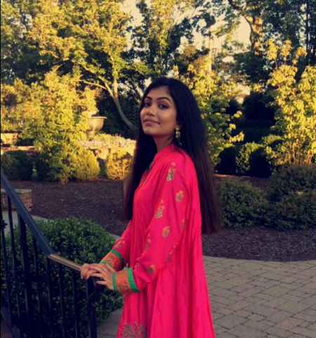

Kyna
|
Malaika ShahI am curently a rising junior at Easton Area High School. At first I was not considering doing computer science as my career option, but after experiencing Girls Who Code, coding has grown on me. I plan on incorporating coding to my careerpath in Law. I have strongly connected with the girls here in GWC(Girls Who Code),and hope to hold onto these relationships. I like to hang out with my friends and family during my free time, and play my cello. |
 Stephanie YepezI'm a rising senior at Bloomfield Tech High School. I'm currently 17 years old. Before joining Girls Who Code, I had no prior knowledge in computer science. However, throughout the program I was able to improve upon my skills in computer science, and I have gained a huge respect for the women in the computer science/computer engineering field. I strongly encourage more girls to learn this skill, and to join this program. |
 Emily
|